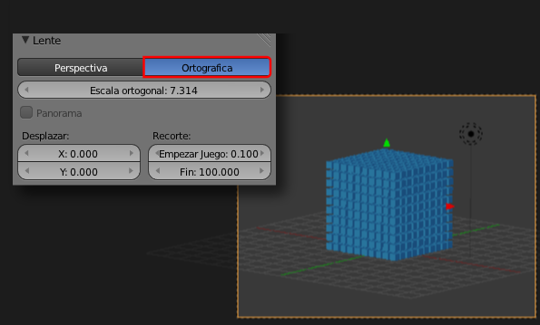

Vista ortográfica
Al pasar al punto de vista de la cámara ("NumPad 0") es intrascendente si nos encontrábamos antes en vista cónica u ortográfica porque la cámara nos muestra la escena desde perspectiva cónica. Eso es porque así está establecido en las opciones de su panel  . Podemos cambiar a Ortográfica y entonces se nos mostrará la escena, y además la renderizará, en ese otro sistema.
. Podemos cambiar a Ortográfica y entonces se nos mostrará la escena, y además la renderizará, en ese otro sistema.
¿Para qué puede ser esto útil? Pues para representaciones técnicas de piezas mecánicas, cabeceras de vídeo...
Todo es igual a la hora de encuadrar excepto el acercamiento/alejamiento que ahora se hace desde las opciones en el campo Escala ortogonal.
